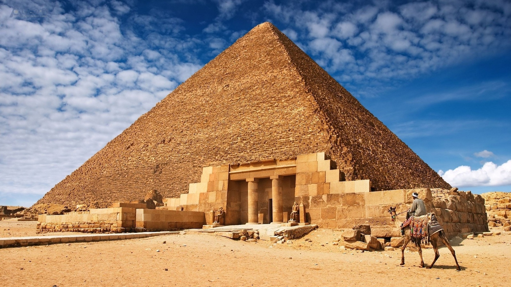

Piramida znajdująca się w Egipcie na płaskowyżu w Gizie. Zbudowana w okresie Starego Państwa ok. 2560 lat p.n.e. z przeznaczeniem na grobowiec faraona Cheopsa (egip. Chu-fu), prawdopodobnie według projektu Hemona.
W egiptologii przyjmuje się, że czas budowy wynosił ok. 20 lat. Wielka Piramida jest częścią nekropolii memfickiej. W starożytności uznana została za jeden z siedmiu cudów świata i jako jedyny z nich dotrwała epoki nowożytnej, chociaż nie bez szwanku: straciła licówkę i skarby.
Piramida Cheopsa wraz z piramidą Chefrena i piramidą Mykerinosa stanowią najokazalszy i najbardziej znany w świecie zespół piramid. W ich pobliżu znajduje się Wielki Sfinks.
Wielka Piramida postawiona została na sztucznie wyrównanym terenie, zmierzone różnice poziomu wynoszą do 2 cm. Boki kwadratowej podstawy ustawione są względem stron świata z dokładnością 4 minut kątowych. Kamienne bloki z wapienia ważące ok. 2,5 tony (największe ok. 15 ton), zostały ustawione z wielką precyzją. Cała budowla składa się z ok. 2,3 miliona kamiennych bloków, ma masę ponad 6 milionów ton i zajmuje powierzchnię 5,2 hektara. Do budowy komór użyto także granitowych bloków ważących od 25 do 80 ton, pochodzących z Asuanu. Piramida była pierwotnie pokryta w całości wykonaną z gładzonego wapienia warstwą zewnętrzną. Z okrywy tej pozostały jedynie nieliczne fragmenty u podnóża piramidy. Pierwotna wysokość budowli wynosiła 146,59 m, współcześnie w wyniku utraty piramidionu i erozji liczy 138,75 m.

Prawdopodobny wygląd piramidy 4500 lat temu

Tak teraz wygląda piramida